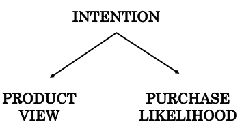

<!DOCTYPE html>
<html lang="en">
<head>
    <meta charset="UTF-8">
    <meta http-equiv="X-UA-Compatible" content="IE=edge">
    <meta name='viewport' content='width=device-width, initial-scale=1.0, maximum-scale=1.0'>
    
    <meta name="description" content="Vy Vo">
    <meta property="og:description" content="Intro to Causal Thinking"/>
    <title>Intro to Causal Thinking</title>
    <script src="https://polyfill.io/v3/polyfill.min.js?features=es6"></script>
    <script id="MathJax-script" async src="https://cdn.jsdelivr.net/npm/mathjax@3/es5/tex-mml-chtml.js"></script>
    <link rel="stylesheet" href="../main.css">
</head>

<body>

    <div class="wrapper-masthead">
        <div class="container">
          <header class="masthead clearfix">
            <a href="https://isvy08.github.io/" class="site-avatar"></a>
  
            <div class="site-info">
              <h1 class="site-name"><a href="https://isvy08.github.io/">Vy Vo</a></h1>
              <p class="site-description">What's life without whimsy</p>
            </div>
            <nav>
                <a href="../blog.html">Blog</a>
                <a href="../projects.html">Projects</a>
                <a href="../stories.html">Stories</a>
                <a href="https://github.com/isVy08">GitHub</a>
            </nav>
          </header>
        </div>
      </div>


    <div id="main" role="main" class="container">
        <div class="posts"> 

    <article class="post" style="text-align: justify;">
        <div>
            <h1>Beyond Correlation:  Intro to Causal Thinking</h1>

            If correlation is not causation, then what is?
           
            <h3>Causation is What Humans Do</h3>
            <p>“Correlation does not imply causation” has been a long-held mantra among generations of scientists. Throughout my experience as an analyst, stating cause and effect is considered a taboo. We refrain from talking about causality, thus resort to association-disguised conclusions such as “X and Y are related” or “X affects Y” while “X is a cause of Y” is all what we want to substantiate. It’s because it’s impossible to act on pure associations.</p>
            <p>To be more specific, one of my projects involved figuring out ways to increase conversion rate for an e-commerce website. I took as many factors into account as possible and worked out their correlations with the target variable. One of the findings was that users who clicked to view at least 3 product options were more likely to end up purchasing the product. In other words, there was a strong (positive) association between the number of products viewed and the likelihood of purchase. This statistically and intuitively made sense but how to act on this finding was a headache.</p>
            <p>Does this mean that we just made users view plenty of options and sales would increase accordingly? Now this intuitively sounds suspicious! None of us were equipped with the language of causality (I did not even know the field of causal inference actually existed), but instinct of an analyst told us that there must be some effects left unaccounted for. And we all circled back to questioning why a user viewing more products tended to convert and whether it was actually the case. After tons of effort of avoiding it, we succumbed to the desire to unveil the causal relationship. As this continues to happen in every single analysis I did, it hit me that no meaningful action can be taken without causal insights.</p>
            <p></p>
            <q style="font-style: italic;">"One cannot substantiate causal claims from associations alone, even at the population level — behind every causal conclusion there must lie some causal assumption that is not testable in observational studies."</q> - Judea Pearl (2009)
            
            <h3>What is Causality?</h3>
            <p> An action or a treatment \(X\) is said to have a causal effect if the outcome of when the action is taken is different from the outcome of when the action is withheld. Otherwise, \(X\) has no causal effect on the outcome. Imagine you were constipated and had a banana. The next thing you know is your bowel movement went normally. To fully substantiate causality in the statement “Banana relieves constipation”, you must indulge in a parallel universe by asking “Had I not eaten that banana, would my constipation have gone away?” If the answer is No, then all credit goes to the banana.</p>
            <p> Let’s explain it mathematically. Suppose I could go back in time and had decided to conduct an experiment to justify my finding on our users’ behavior. Assume I was able to restrict some users to viewing less than 3 options while allow the others to view 3 or more, and I want to figure out whether they would end up buying the product.</p>
            <p>Let \(X\) be a random variables for treatment (1: view at least 3 options, 0: view under 3 options) and \(Y\) be an outcome variable (1: purchase, 0: not purchase). Here we also have to strictly define the time frame under which to measure our outcome, for example purchase within 1 week after being assigned the treatment, but you can safely ignore this for now.</p>
            <ul>
                <li>\(Y_i \ (X = 0) \) is the outcome variable that would have been observed in an individual \(i\) under treatment value \(X = 0\)</li>
                <li>\(Y_i \ (X = 1) \) is the outcome variable that would have been observed in that individual under treatment value \(X = 1\)</li>
            </ul>
            <p></p>
                For an arbitrary individual user named John, if:
            <p></p>
            $$Y_i \ (X = 0) ≠ Y_i \ (X = 1)$$
            <p> we say X has a causal effect on John’s outcome and not otherwise. This is individual causal effect and such outcomes are referred to counterfactual outcomes.
                For a well-defined population, we measure average causal effect. Such an effect is present in the population if</p>
            <p></p>
            $$\mathsf{P} \ ( Y \ | \ do(X) = 1)  ≠ \mathsf{P} \ ( Y \ | \ do(X) = 0)$$ 
            \( \mathsf{P} \ ( Y \ | \ do(X) = 1) \) and \( \mathsf{P} \ ( Y \ | \ do(X) = 0)\) are defined as the proportions of the population developing the outcome had all individuals received treatment \(X = 0\) and \(X = 1\) respectively. In this case, I could have compared \(\mathsf{P} \ ( Y = 1 \ | \ do(X) = 1)\) with \(\mathsf{P} \ ( Y = 1 \ | \ do(X) = 0) \) — the proportion of users that actually purchased if all users had been forced to view at least 3 options with the proportion of those that did had they been made to view less than 3.</p>
            <p>At this point, you may find these notations somewhat similar to those we use for conditional probabilities. 
                Indeed, \( \mathsf{P} \ (Y \ | \ X = 0) \) and \( \mathsf{P} \ (Y \ | \ X = 1) \) are associational probabilities derived from data collected through Big Data systems or generally from observational studies. Recall that \( \mathsf{P} \ (Y = 1 \ | \ X = 0) \) is the proportion of users that purchased given that they have viewed less than 3 options.</p>
            <p> The two concepts are fundamentally different, and the discrepancy lies in the <strong>do</strong> operator. While association is about <strong>observation</strong
                >, causation is about intervention. The keyword here is to <strong>force</strong>. If any causal effect was found my experiment, it would be due to my intervention in which I subjected the users to one of the 2 treatments. Recall that the correlation was found within my data whereas my hypothetical experiment seeks to answer the question “Would they have converted had I made them view at least 3 options.” </p>
            <p><strong>To do</strong> and <strong>To be forced to do</strong> are not just semantically but statistically distinct.</p>
            
            <h3>How to Find Causality</h3>
            <p>The outcomes are counterfactual because in reality, only one of such outcomes occurs for each individual. Let’s say we set John up for viewing at least 3 product options \((X = 1)\) but no sales was generated \((Y = 0)\). Then John’s counterfactual outcome \(Y_i \ (X = 1)\) would be his actual outcome, which equals 0 while his other counterfactual outcome \(Y_i \ (X = 0)\) remains forever unobserved.</p>
            <p>However, if I was able to design such an experiment in which I randomly assigned some users to treatment \( X = 1 \) and the others to treatment \(X = 0\), then association would be causation, or</p>
            $$ \mathsf{P} \ ( Y = 1 \ | \ do(X) = 1) = \mathsf{P} \ ( Y = 1 \ | \ X = 1)$$
            <p>It is proved that randomized experiments or randomized control trials (RCT) can yield convincing causal relationships. However, it is not always physically feasible to conduct a RCT. In this case, in order to restrict a random user to view less than 3 product options, we may have had to “corrupt” our own website to display only no more than 2 products. But doing so would have caused users to bounce as they may think there’s something wrong with the site. Sometimes, it is unethical or legally impermissible to perform such an experiment. Imagine a study to investigate whether obesity causes heart diseases requires feeding participants with junk food over an extended period of time to fatten them up!</p>
            <p>Fortunately, significant progress has been made within the field of causal inference for the past decade. And the Causal Revolution has equipped us with sufficient languages and methodologies to derive causality from observational studies.</p>
            
            <h3>From Correlation to Causation</h3>
            <p>Let’s retrace a bit. \(\mathsf{P} \ ( Y \ | \ do(X) ) \) can only be estimated through intervention in a randomized experiment. Without RCTs, we are left with classical probability \(\mathsf{P} \ ( Y \ | \ X ) \). The goal is to use this observational data to estimate causal effect by eliminating the <strong>do-operator</strong>. We cannot remove it by physically deleting the do notation but must go through legitimate and standardized manipulations.</p>
            <p>Facing the difficulty of translating the observed insights to causal action, we had a hunch that other factors must have come into play. One possible factor is users’ intention. A user with high intention to buy the product tends to consider more options, thus more likely to complete the transaction. These entangled effects among these factors can be illustrated via a causal diagram</p>
            <figure style="text-align: center;">
                
                <figcaption style="font-size: small;">A simple example of causal graph</figcaption>
            </figure>
            <p>The graph consists of 3 nodes representing variables <i>Intention (Z)</i>, <i>Product View (X)</i> and <i>Purchase Likelihood (Y)</i>. The direction of the edges or arrows indicates the causal effect from one variable to another. The graph shows that Intention is the common cause of <i>Product View</i> and <i>Purchase Likelihood</i>, represented by two arrows pointing from Intention to the other variables. The presence of one or more variables that renders causation distinct from association between treatment and outcome is called <strong>confounding</strong> and Intention is referred to as <strong>confounder</strong>.</p>
            <p>Some literature restricts the definition of confounding to biases due to common causes of treatment and outcome and uses different terms for other sources of biases. Such diagram is known as <strong>Directed Acyclic Graph (DAG)</strong>, which incorporates knowledge and assumptions about the causal structure of interest which helps clarify the conceptutal problem at hand.</p>
            <p>For structures like this one, if we assume that there are no other confounders, the causal effect of Product View on Purchase Likelihood can be determined by conditioning on Intention. Without adjusting for Intention, information is said to flow from Product View to Purchase Likelihood, which explains why an association was found before Intention is introduced. If we look at the data on users with low intention only, we may see that users do not make any purchase regardless of how many options they have viewed. Mathematically, this is equivalent to</p>
            $$ \mathsf{P} \ (Y = 1 \ |\  X = 1,\ Z = 0) = \mathsf{P} \ ( Y = 1 \ | \ X = 0, \ Z = 0) $$
            
            <p>Given that our model is robust, we can get the same result by conditioning on users with high intention. Then we can conclude that viewing 3 or more products does not cause users to purchase.</p>
            <p>It is crucial to note that controlling for the third variable(s) does not always eliminate confounding bias. Sometimes, it is the controlling practice that leads to biases. The path that links \(X\) and \(Y\) through their common cause \(Z\) is an example of a <strong>backdoor path</strong> and this backdoor path can be blocked by controlling for \(Z\) to yield causal-effect relationship.</p>
            <p>Adjustment for confounding requires knowledge and data of sufficient set of confounders. Back to our example, measuring a user’s intention would be quite of a challenge, especially when most of our visitors remained unidentified. Other methods to justify causality include Judea Pearl’s <strong>do-calculus</strong> and <strong>front-door</strong> criterion (manipulation the direct path from X to Y without passing through \(Z\)). How to find causality is a massive topic, which I will explain in details in another article.</p>
            
            <h3>Conclusion</h3>
            <p>Humans are endowed with the ability to reason causally. In the face of discrepancy, we are tempted to question why in the hope of discovering causes and effects. Whenever I struggled to answer a causal question, I attributed the difficulty to lack of sufficient sample or robust techniques. It never occurred to me that the answer was not contained in the data in the first place nor could be obtained from traditional statistical analysis.</p>
            <p>It is absolutely normal to find your mind boggle upon the first touch with causal inference. Let the burning questions drive you to explore the marvels of causality.</p>
            
            
            
            <h4>References</h4>
                <ul style="font-style: italic;">
                    <li>Causality: Models, Reasoning and Inference - Judea Pearl (2009)</li>
                    <li>Causal inference in statistics: An overview - Judea Pearl (2009)</li>
                    <li>Causal Inference: What If - Miguel A.Hernán and James M.Robins (2010)</li>
                    <li>The Book of Why: The New Science of Cause and Effect - Judea Pearl and Dana Mackenzie (2018)</li>
                </ul>
        </div>
    </article>
        </div>
    </div>
    <div class="wrapper-footer">
        <div class="container">
        <footer class="footer">


        <a href="https://www.facebook.com/isVy08"><i class="svg-icon facebook"></i></a>        
        <a href="https://twitter.com/isVy08"><i class="svg-icon twitter"></i></a>
        <a href="https://www.linkedin.com/in/isvy08/"><i class="svg-icon linkedin"></i></a>
        <br><p style="font-size: 10px;">&copy; 2021 Vy Vo. Powered by Jekyll and Jekyll Now Theme</p>   

        </footer>
        </div>
    </div> 
</body>
</html>
